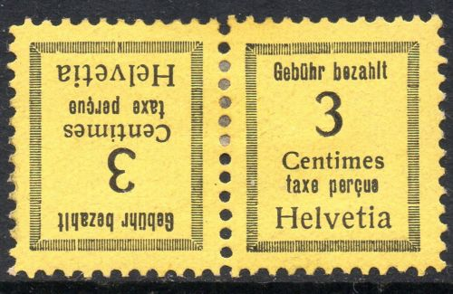
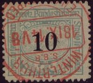
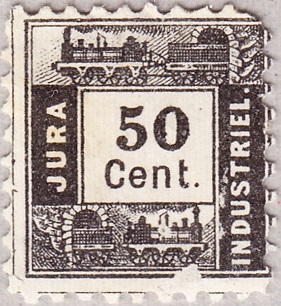
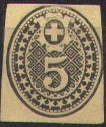

Return To Catalogue - Switzerland
Note: on my website many of the
pictures can not be seen! They are of course present in the
catalogue;
contact me if you want to purchase the catalogue.
1 c blue (with lines in cirlce) 2 c blue 3 c blue 5 c blue 10 c blue 20 c blue 50 c blue 100 c blue 500 c blue
For the specialist: some of these stamps exist on paper with small silk threads.
Value of the stamps |
|||
vc = very common c = common * = not so common ** = uncommon |
*** = very uncommon R = rare RR = very rare RRR = extremely rare |
||
| Value | Unused | Used | Remarks |
| Cheapest types | |||
| 1 c | * | * | |
| 2 c | * | * | |
| 3 c | *** | *** | |
| 5 c | *** | *** | |
| 10 c | *** | ** | |
| 20 c | *** | ** | |
| 50 c | RR | *** | |
| 100 c | RR | *** | |
| 500 c | RR | *** | |


1 c green and red 3 c green and red 5 c green and red 10 c green and red 20 c green and red 50 c green and red 100 c green and red 500 c green and red
For the specialist: there are three shades of green for this issue.
Value of the stamps |
|||
vc = very common c = common * = not so common ** = uncommon |
*** = very uncommon R = rare RR = very rare RRR = extremely rare |
||
| Value | Unused | Used | Remarks |
| Cheapest types | |||
| 1 c | c | c | |
| 3 c | *** | ** | |
| 5 c | * | c | |
| 10 c | * | c | |
| 20 c | * | c | |
| 50 c | *** | * | |
| 100 c | *** | * | |
| 500 c | RR | *** | |

2 c green and red 3 c green and red 5 c green and red 10 c green and red 15 c green and red 20 c green and red
These stamps exist with a control number printed at the top of the stamp. These stamps are franchise stamps(?).
Value of the stamps |
|||
vc = very common c = common * = not so common ** = uncommon |
*** = very uncommon R = rare RR = very rare RRR = extremely rare |
||
| Value | Unused | Used | Remarks |
| 2 c | * | c | |
| 3 c | c | c | |
| 5 c | c | c | |
| 10 c | * | * | |
| 15 c | * | * | |
| 20 c | * | * | |

1 c green and red 3 c green and red 5 c green and red 10 c green and red 20 c green and red 25 c green and red 30 c green and red 50 c green and red
Value of the stamps |
|||
vc = very common c = common * = not so common ** = uncommon |
*** = very uncommon R = rare RR = very rare RRR = extremely rare |
||
| Value | Unused | Used | Remarks |
| 1 c | c | c | |
| 3 c | c | c | |
| 5 c | * | c | |
| 10 c | * | c | |
| 15 c | * | c | |
| 20 c | * | c | |
| 25 c | * | * | |
| 30 c | * | c | |
| 50 c | ** | * | |
Surcharged '5' on 3 c green and red (1916) '10' on 1 c green and red (1924) '10' on 3 c green and red (1924) '20' on 50 c green and red (1924)
Value of the stamps |
|||
vc = very common c = common * = not so common ** = uncommon |
*** = very uncommon R = rare RR = very rare RRR = extremely rare |
||
| Value | Unused | Used | Remarks |
| 5 c on 3 c | * | * | |
| 10 c on 1 c | * | * | |
| 10 c on 3 c | * | * | |
| 20 c on 50 c | * | * | |

5 c green and red 10 c green and red 15 c green and red (1926) 20 c green and red 25 c green and red 30 c green and red 40 c green and red (1926) 50 c green and red Surcharged (1937) 5 on 15 c green and red 10 on 30 c green and red 20 on 50 c green and red 40 on 50 c green and red

Private stamps made by Sekula, reduced
size. The inscription is: "Gebühr bezahlt taxe perçue
Helvetia". I have seen the following values: 3 c black on
yellow, 5 c black on green, 10 c black on violet and 20 c black
on red. Tete-beche pairs exist.

Value of the stamps |
|||
vc = very common c = common * = not so common ** = uncommon |
*** = very uncommon R = rare RR = very rare RRR = extremely rare |
||
| Value | Unused | Used | Remarks |
| (-) | R | RRR | |
At least the forger Fournier has offered forgeries of these stamps (he offers them for 0.50 Swiss Francs each in his 1914 pricelist as second choice forgeries), I have no pictures available of these forgeries right now.

I've been told that this is a forgery with forged cancel.

Many other values exist: 5 c brown, 10 c blue, 20 c olive, 25 c yellow, 30 c green, 40 c green, 50 c blue, 60 c orange, 70 c violet, 80 c olive, 90 c blue, 100 c red, 200 c violet, 300 c violet, 500 c grey, 1 Fr orange, 2 Fr red, 3 Fr violet, 4 Fr yellow, 5 Fr grey, 10 Fr black and red (value in red), 20 Fr brown, 30 Fr violet and 50 Fr red. A complete listing with all the types can be found on: http://www.timbressuisses.ch/cadre.htm.



These are not parcel stamps, but used on tickets (with an image
of a train on top) or on luggage registration (with
"ENREGISTREMENT" on top). If my information is correct,
at least 5 types exist.
See also https://alphabetilately.org/TOC/parcels-8.html
Despite not being fiscal stamps, they are listed in the Forbin guide. The following values are given there (in 5 types each value if I understand correctly?) Imperforate 1 c red 1 c green 2 c red 2 c brown 3 c red 10 c blue 15 c red Perforated 12: 1 c green 1 c brown 2 c green 1 F red 2 c red 2 c brown 3 c brown 3 c red 3 c green 5 c green 5 c red 10 c blue 15 c red 30 c olive 60 c brown Value in a square, perforted 20 c black 50 c black 100 c black


Value of the stamps |
|||
vc = very common c = common * = not so common ** = uncommon |
*** = very uncommon R = rare RR = very rare RRR = extremely rare |
||
| Value | Unused | Used | Remarks |
| Both types | ** | * | |

2 c red 5 c red


5 c red (postcard) 5 c brown (envelope) 10 c red (envelope) 25 c green (envelope) 30 c blue (envelope)


2 c red 2 c brown 2 c black 5 c red 5 c brown 5 c black 10 c red
The following other values are known to me: 5 c orange, 5 c green. Some of the above stamps have a slightly different design, the value is slightly smaller (and other small differences).
Inscription 'TAXE 20 TASSA' in a small ellipse
Later issue, '10 HELVETIA' green
(Issued stamps during the second world war)
0.05 F green 0.10 F brown 0.20 F red 0.30 F blue 1 F violet
With large 'T' overprint
I've seen the values 0.10 F and 0.30 F with a large 'T' overprint (postage due?).
(Reduced sizes)
0.05 F green (lake view) 0.10 F brown 0.20 F red (larger size) 0.30 F blue (town view with lake) 0.40 F violet (church) 0.60 F brown (scene from church) 1 F green (townhall?)
I've seen the values 0.05 F, 0.10 and 0.20 with a large 'T' overprint (similar to the previous issue, postage due stamps?).
5 c black and red 10 c red 25 c grey and red 50 c blue and red 1 Fr green and red 3 Fr brown and red (also gold and red?) 20 F lilac and red
These stamps were no longer valid after 31 December 1886 and the remainders were sold in 1887. Forged cancels exist on these remainders, made with the genuine cancelling devices (but after the validity period of the stamps).

A Menke-Huber postcards with
reproductions of these stamps. Although I have not seen any
'forgeries' made from this card, the Menke-Huber cut outs for
other Swiss stamps have been known to be offered as genuine.
Examples (all of them issued in 1913):
'Sweiz Flugpost Start Aarau', 'Flugspende Basler Flugtage', 'Flugspende Bern', 'Journee Valaisanne d'aviation Sion', 'Flugspende Langnau', 'Erste Flugpost Burgdorf Bern', 'Herisauer Flugtag', 'Flugtag in Liestal', 'Lugano Pro Aviazone Nazionale' and 'Solothurner Flugpost' (as far as I know, all the labels presented here are genuine):
Forgeries: I know that the 'Langnau' label has been forged by a forger from Hialeah Florida; large numbers of these forgeries are offered on Ebay. General remarks about these forgeries: the forger has probably used a computer scanner and printer, the details are mostly lost in most of his forgeries, the paper is modern and the size does in general not correspond to genuine stamps.
The Lugano label as shown above was used on 8th June 1913 on a flight from Lugano to Mendrisio. The cancel applied was 'Posta Aera Svizzera Lugano 8 Guig 1913' in black or blue (rare). 4100 stamps were issued, in sheets of 10 (five rows of two stamps each). They were very soon sold out in Lugano, such that some of the letters intended to be taken on the flight did not have this stamp. In Bellinzona, Chiasso, Locarno and Mendrissio, these stamps were also for sale. About 700 stamps were not sold at the event finally, but later sold to stamp collectors (unused stamps are thus quite rare). Source: Bulletin of "Helvetia", society for collectors of Switzerland', vol. XII, no7, July 1949; available online (http://www.swiss-stamps.us). Forgeries appeared in 1926, the distinguishing characteristics (mainly the color shades) can be found in the above mentioned source.
Besides the 'propellor with wings' overprint of 1919 on postage stamps, the first airmail stamps were issued in 1923.
15 c red and green 20 c green (1925) 25 c blue 35 c brown 40 c violet 45 c red and blue 50 c black and red 50 c green and red (1936) Surcharged '10' on 15 c red and green (1935) '1938 PRO AERO 75 75' on 50 c black and red (1938)
65 c blue 75 c lilac and orange 1 F violet Surcharged '10' on 65 c blue (1935)
35 c brown and yellow 40 c blue and green
2 F black and brown on grey
15 c green and grey 20 c red and lilac 90 c blue and grey
I have been told that the following stamps are essays for Switzerland:
(Reduced sizes)
They have the head of a woman with inscription 'HELVETIA FRANCO', I have seen the imperforate values: 50 c blue, 50 c orange, 50 c black, 50 c lilac, 1 F blue, 1 F orange, 1 F red, 1 F black and 1 F green. I have also seen a 50 c green on red and a 1 F orange perforated.
1870 Red Cross label, inscription "COMITÉ INTERNATIONAL GENÈVE":
This label was a postage free stamp.
I have often seen the following label for the "EXPOSITION NATIONALE SUISSE" in Geneva 1896:
(Reduced size)
(reduced sizes)


Tell's son: 3 c brown 5 c green 7 1/2 c grey Tell: 10 c red on yellow 15 c violet on yellow Woman: 20 c red and yellow 25 c blue 30 c brown and green


The two types of overprint.
All values exist with two types of overprint: the lettering is different. See for example the 'g' of 'Kriegs'.
The official status of these overprints seems questionable. Furthermore, I have seen forged overprints.
Another overprint "SOCIETE DES NATIONS" also exists (1922); this overprint also exists forged. Genuine stamps exist cancelled to order as well (genuine cancels are usually smudged). Genuinely used stamps almost almost have a Geneva cancel, any other town cancel is highly suspect. Double overprints are always forged.
Another overprint "S.d.N. Bureau international du Travail" was made in 1923

Example of this overprint
The peace issue of 1932 also exists with this overprint.


{kind=link}
{kind=link}
{kind=link}
{kind=link}